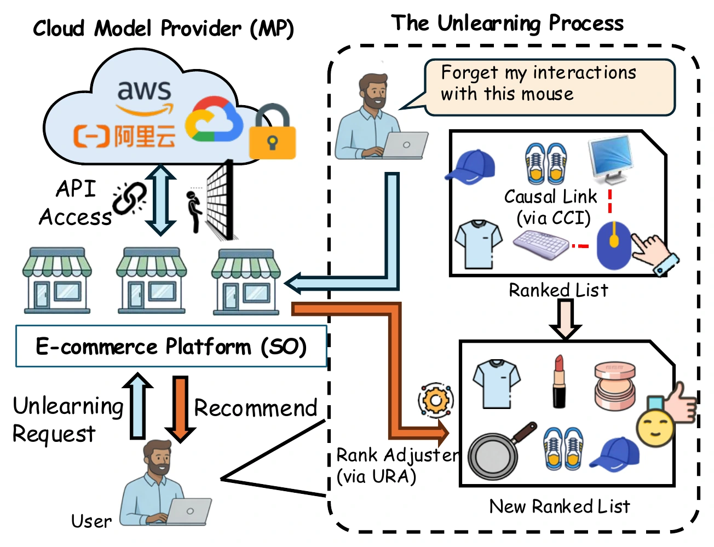
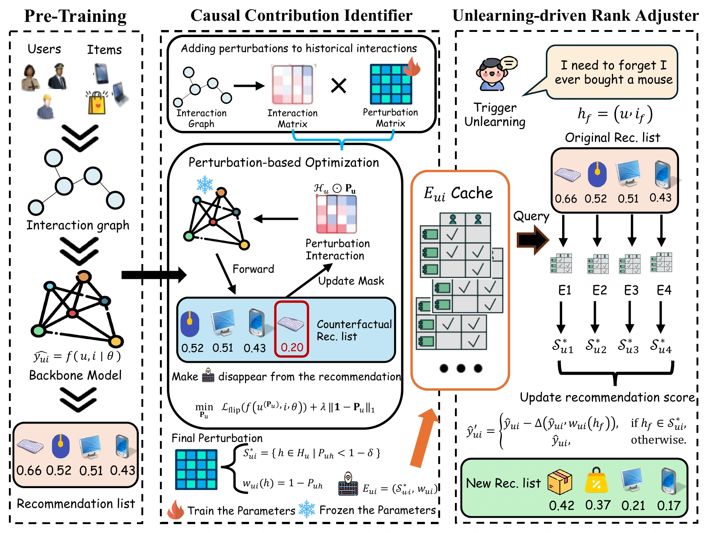
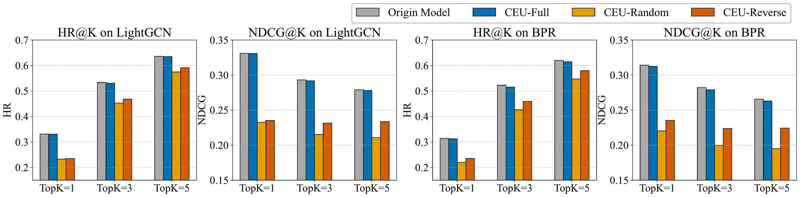
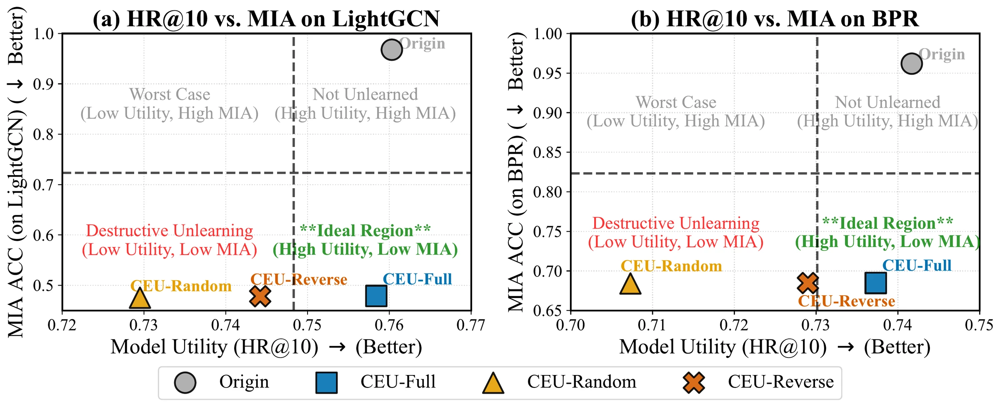
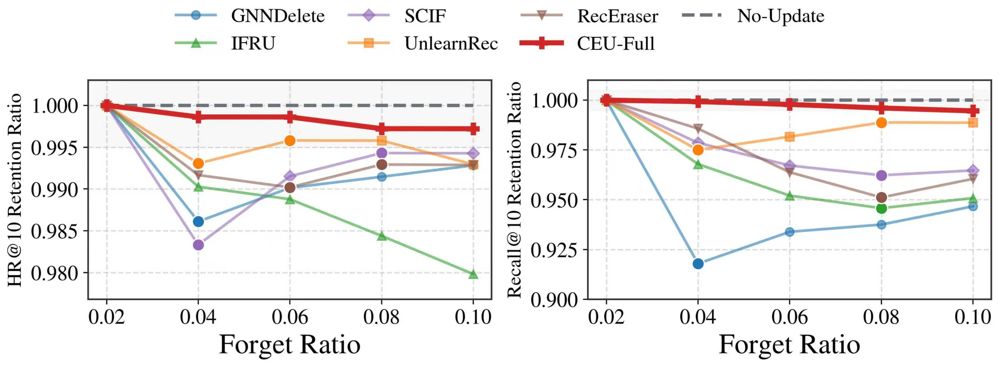

IEEE ICDM 2026 · Recommendation Unlearning
Explain, Then Forget:
Recommendation Unlearning under Asymmetric Access Constraint
1 Xi'an Jiaotong-Liverpool University, China
2 University of Liverpool, United Kingdom
† Corresponding author
A parameter-free path to unlearning
无需修改参数的遗忘路径
01
CCI
Explain解释
Identify the minimal causal support and quantify how each interaction shapes a recommendation.
识别最小因果支持集，量化每条历史交互对当前推荐的影响。
02
URA
Forget遗忘
Apply a localized score adjustment and rebuild the ranking while the pretrained model stays fixed.
仅调整受影响项目的得分并重排推荐，预训练模型保持不变。
API-only MLaaS
No parameter updates
Continuous requests
At a glance研究概览
Recommendation unlearning without model access
CEU turns causal explanation into an output-level intervention for recommender systems exposed only through APIs.
无需访问模型内部的推荐遗忘
CEU 将因果解释转化为输出层干预，适用于只能通过 API 访问的推荐系统。
01 · Motivation
Asymmetric access changes the unlearning problem
In Machine-Learning-as-a-Service, a model provider trains and hosts the recommender while a service operator serves users through APIs. The operator receives forgetting requests but cannot retrain, fine-tune, or inspect model parameters.
CEU works within this boundary. The provider supplies causal explanations, and the operator uses them to adjust only the affected ranking scores.
非对称访问改变了推荐遗忘问题
在机器学习即服务架构中，模型提供方负责训练和托管推荐模型，服务运营方只能通过 API 为用户提供推荐。运营方接收遗忘请求，却无法重训练、微调或访问模型参数。
CEU 在这一边界内工作：模型提供方输出因果解释，服务运营方据此只调整受影响项目的排序得分。

02 · Abstract
Abstract摘要
Recommendation unlearning aims to remove the influence of specific historical interactions that should no longer affect future recommendations, such as noisy clicks or outdated user preferences. The task becomes substantially harder in Machine-Learning-as-a-Service architectures, where a service operator accesses a remotely hosted recommender only through APIs and cannot modify its internal parameters.
We propose Causal Explanation-based Unlearning (CEU), an output-level framework for this asymmetric access setting. CEU first estimates how a forgotten interaction causally contributes to the current recommendation. Guided by this signal, it then removes the interaction's influence by adjusting the final ranking scores of affected items. Because CEU leaves model parameters untouched, it supports continuous unlearning requests without accumulating errors from repeated parameter updates. Experiments on three public datasets show effectiveness comparable to full retraining while preserving recommendation utility and substantially reducing computation.
推荐遗忘旨在移除不应继续影响未来推荐的历史交互，例如误点击或已经过时的用户偏好。在机器学习即服务架构中，这一任务更加困难：服务运营方只能通过 API 访问远程托管的推荐模型，无法修改模型内部参数。
我们提出基于因果解释的遗忘框架 CEU，面向这种非对称访问场景。CEU 首先估计待遗忘交互对当前推荐的因果贡献，再利用该信号调整受影响项目的最终排序得分，从而移除相应影响。由于 CEU 不改变模型参数，它能够持续处理遗忘请求，并避免重复参数更新带来的误差累积。三个公开数据集上的实验表明，CEU 的遗忘效果可与完全重训练相比，同时保持推荐效用并显著降低计算成本。
03 · Contributions
What CEU adds
A practical unlearning design for the constraints that service operators actually face.
CEU 的主要贡献
针对服务运营方真实访问约束设计的实用推荐遗忘方案。
Unlearning for API-only systems
A parameter-free framework tailored to MLaaS, where the service operator cannot access model weights or gradients.
面向 API 场景的推荐遗忘
为服务运营方无法访问模型权重和梯度的 MLaaS 场景设计，无需更新参数。
Causal Contribution Identifier
CCI finds the minimal causal support behind a recommendation and assigns a contribution weight to each supporting interaction.
因果贡献识别器
CCI 寻找支撑推荐结果的最小因果集合，并为每条关键交互分配贡献权重。
Localized ranking intervention
URA uses the causal signal to adjust only affected candidates, then reconstructs the ranking without disturbing unrelated preferences.
局部排序干预
URA 根据因果信号只调整受影响候选项目，并重新构建排序，尽量不扰动无关偏好。
Utility, forgetting, and speed
Results across three datasets and two recommenders show strong utility retention, effective forgetting, and low online latency.
效用、遗忘效果与效率
三个数据集与两类推荐模型的结果表明，CEU 同时保持推荐效用、实现有效遗忘并降低在线延迟。
04 · Method
Explain the cause, then remove its effect
CEU separates causal attribution at the provider from ranking intervention at the operator.
先解释原因，再移除影响
CEU 将模型提供方的因果归因与服务运营方的排序干预解耦。

CCIExplain stage
Causal Contribution Identifier
CCI learns a sparse continuous mask over the user's history. Interactions whose suppression flips the recommendation form the causal support set. Their mask values determine how strongly each interaction sustains the recommendation.
因果贡献识别器
CCI 在用户历史上学习稀疏连续掩码。能够在被抑制后改变推荐结果的交互构成因果支持集，掩码值则刻画各交互对推荐结果的支撑强度。
URAForget stage
Unlearning-driven Rank Adjuster
When a user revokes an interaction, URA checks which candidate recommendations depend on it. Only those scores receive a causal-weighted penalty before the operator produces a new ranking.
遗忘驱动的排序调整器
当用户撤回一条交互时，URA 判断哪些候选推荐依赖该交互，只对这些项目施加由因果贡献控制的惩罚，再生成新的排序列表。
05 · Experiments
Precise forgetting without the cost of retraining
Three public datasets, two backbone recommenders, and representative retraining, fine-tuning, and influence-based baselines.
无需重训练成本的精准遗忘
在三个公开数据集、两类推荐模型以及重训练、微调和影响函数等代表性基线上进行验证。
CEU HR@10, compared with 0.7680 for the original model.
CEU 的 HR@10；原始模型为 0.7680。
MIA accuracy at 10% forgetting, matching random guessing.
遗忘 10% 数据时的 MIA 准确率，达到随机猜测水平。
Maximum online latency across all reported dataset/backbone pairs.
所有数据集与推荐模型组合中的最大在线延迟。
RQ1 + RQ4
Causal guidance preserves recommendation utility
CEU-Full stays close to the original model across both LightGCN and BPR. Random or reversed attributions reduce utility sharply, showing that accurate causal support is essential rather than decorative.
因果引导保持推荐效用
在 LightGCN 和 BPR 上，CEU-Full 的表现均接近原始模型；随机或反向归因会明显破坏效用，说明准确的因果支持是方法有效性的关键。

RQ2
CEU reaches the useful forgetting region
The desired operating point combines high ranking utility with low membership-inference accuracy. CEU-Full occupies this region, while non-causal variants achieve low attack accuracy only by damaging recommendation quality.
CEU 进入有效遗忘区域
理想工作点同时要求较高的排序效用与较低的成员推断准确率。CEU-Full 位于该区域，而非因果变体只能通过破坏推荐质量来降低攻击准确率。

Stress test
Retained-set performance stays stable
As the forgetting ratio increases from 2% to 10%, CEU remains close to the no-update reference. Parameter-updating baselines show larger drops in HR@10 and Recall@10 retention.
保留集性能保持稳定
当遗忘比例从 2% 增加到 10% 时，CEU 始终接近不更新模型的参考结果；需要修改参数的基线在 HR@10 和 Recall@10 保留率上下降更明显。

06 · Presentation
Paper presentation
A complete introduction to the motivation, CEU framework, and experimental findings.
论文报告视频
完整介绍研究动机、CEU 框架与主要实验结果。
07 · Citation
Cite this work
The entry below reflects the accepted ICDM 2026 paper. DOI and page numbers will be added when the proceedings become available.
引用本工作
以下信息对应 ICDM 2026 录用论文。正式论文集发布后，将补充 DOI 与页码。
BibTeX
@inproceedings{zhang2026explain,
title = {Explain, Then Forget: Recommendation Unlearning under Asymmetric Access Constraint},
author = {Zhang, Haichao and Zhang, Chong and Wang, Wen and Qiu, Shi and Hu, Peiyu and Wang, Jia},
booktitle = {2026 IEEE International Conference on Data Mining (ICDM)},
year = {2026},
url = {https://zhanghaichao.loc.cc/CEU/}
}Acknowledgements
This study was funded by the National Natural Science Foundation of China (Grant No. 72401232), the Natural Science Foundation of the Jiangsu Higher Educational Institution of China (Grant No. 23KJB520037), the XJTLU Research Development Fund (RDF-21-01-053), and Liaoning Liaohe Lab (Grant Nos. LLL24ZZ-02-01 and LLL24ZZ-02-02).
致谢
本研究获得国家自然科学基金（72401232）、江苏省高等学校自然科学研究项目（23KJB520037）、西交利物浦大学研究发展基金（RDF-21-01-053）以及辽宁辽河实验室（LLL24ZZ-02-01、LLL24ZZ-02-02）的支持。